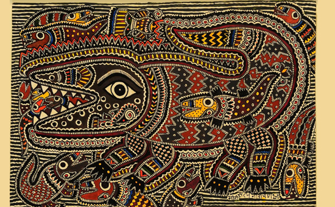
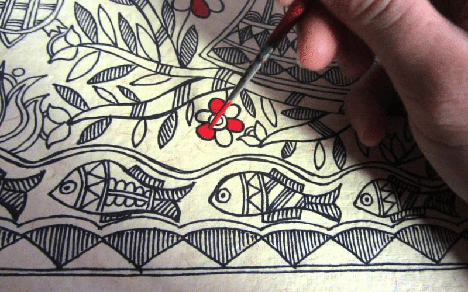
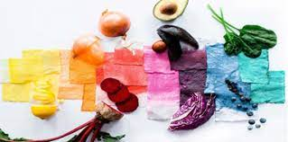
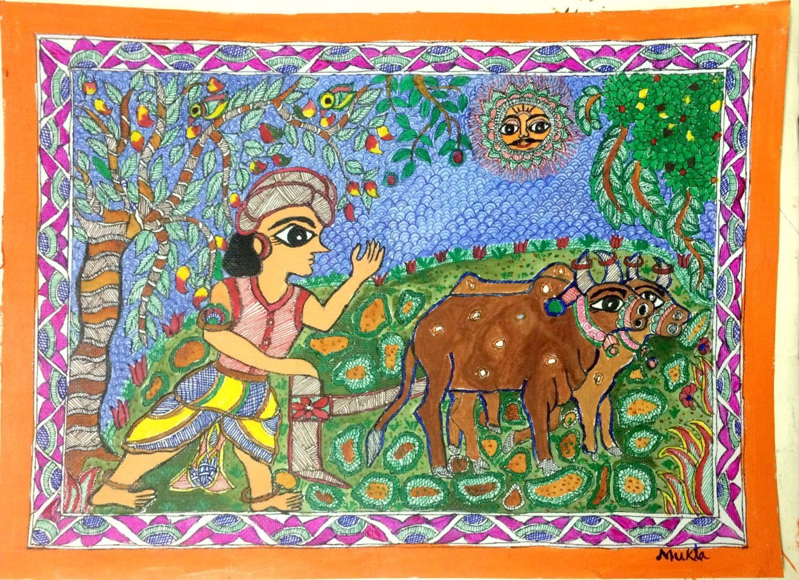

Welcome to MADHU-MITHILA
About the citizen-driven initiative on rural arts

Personal project is a new journey in which students of MYP5 delve into problems which the world faces and they provide solutions to ensure that the problem is solved. The project is a combination of the topics learnt throughout the 4 stages of MYP
The main journey of the project begins from MYP 4, in which students first go through an exhibition in which the current MYP 5 batch explain their project. After going through the exhibition, they are given a session on what the personal project is and how it should be achieved. The main deadline of the project is during the summer vacations, since the evaluation of the project takes place during the 1st term of MYP 5, for the new batch.
The project I would be taking up during the Personal Project 2023-24 of Pathways School Gurgaon is on promoting technology in rural arts, in the field of Mithila painting
Madhu Mithila is a project taken up by Aarav Shrivastava, who is 15-yr-old boy. In this, the main aim is to promote technology in rural art, especially in Madhubani art, to ensure that the artists earn more income through selling their artworks online.
This is a project which is collaborating hands with Jeevika foundation, which is a government driven foundation in the state of Bihar. We would be collaborating with the SHG's, or the Self Help Group
About Jeevika foundation
Jeevika foundation is a government driven found by the government of Bihar
This foundation focuses on spreading social and economic empowerment towards the uneducation and underprivileged people. The foundation works under Central Scheme Swarnajayanti Gram Swarozgar Yojna, which aims to let all underprivileged citizens access self employment. This scheme has already been successful. Since it success, the government announced NRLM, which aims to spread self employment opportunities across whole India. There are certain levels of consultations
Some of the consultations are available in
-district level
-state level
-national level
Some of the departments in Jeevika are
-DRDA's
-Civil Society
-NGO's
-Bankers
-Educational and research institutions
Another Project is the SPIP, which aims to end poverty in households, and increase self employment. With these approaches, we would be seeing a drastic improvement and build more strong institutions.
Principles of Jeevika are
Making a vibrant experience of banking for women community
Through banking in women community, we would be able to understand about member saving, internal loaning and revolving fund
The primary levels, SHG's, also known as Self Help Group, starts in a village, in which they create clusters. Through clusters, they learn to become membership based social service citizens, business entities and clients of a formal banking system. The project is designed to focus on building self-run model of a community in which women get work experience.
SHG only focuses on 6 districts and they are made since the gradual increase in poverty. The VO, or Village Organization, focuses on food development in villages
Meetins are required for Village Organizations, where the community discusses how much food should be purchased and which type of food should we be eating.
Main aim of Jeevika
Improve livelihood and improve economic and social area of the rural sector
Help poor people access to services and jobs
Promote development in the country from real life job experience
Livelihood
This is an initiative taken by Jeevika, in which the objective is to enhance productivity growth for employment generation. This would only be achieved through investment in technology, service provision, and setting up of market mechanism. 80% of livelihood depens on agricultural labor, and agricultural dependence is based on sharing crops like Paddy
For improving food security in Bihar, productivity of Paddy should be increasig through different systems of rice intensification and participatory varietal selection. Also, cattle rearing is a part of livelihood. Through different initiative of cattle rearing and paddy, the project remains a huge success
ABOUT MADHUBANI ART


Madhubani art was originated from the city of Mithila, where the Ramayana character, Lord Sita was born. These paintings were considered to show stories of Indian epics Mahabharata and Ramayana. Some of the potrayal of Madhubani art in some of the paintings are the Swayamwara of Sita, in which Rama broke the might bow of Lord Shiva and married Lord Sita
This form of art is also called as Kulin art, which is also known as arts of the Caste. These artworks are also made to show practices and reforms
These paintings are done in canvases, papers and walls, and the purpose of making this artwork is based on dualism
By the time of 1934, this painting was rediscovered by British Colonial Officer Sir William G Archer in the Madhubani district
The paintings are made based on figurate and non figurate wall paintings.
Kohbar of North Bihar- 1st Image
Kohbar of Eastern UP- 2nd Image
Kohbar of Madhubani- 3rd Image


RESOURCES AND TOOLS USED TO MAKE MADHUBANI ARTWORK
 
Thin layers of mud and cow dung are used to create a strong purpose
Painting is done through using finger, bamboo twigs, cotton rags and pen
The central theme of Madhubani art is to show love and fertility. The subjects used in Madhubani art are
1-Bride surrounded by fish

2-Bride wearing nuptial crown
3-Hunting and ploughing

4-Trees